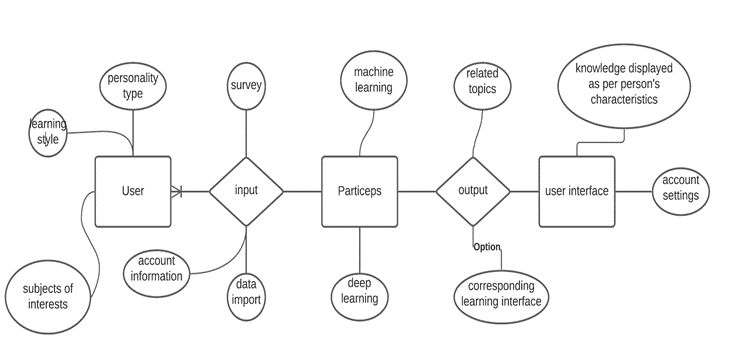
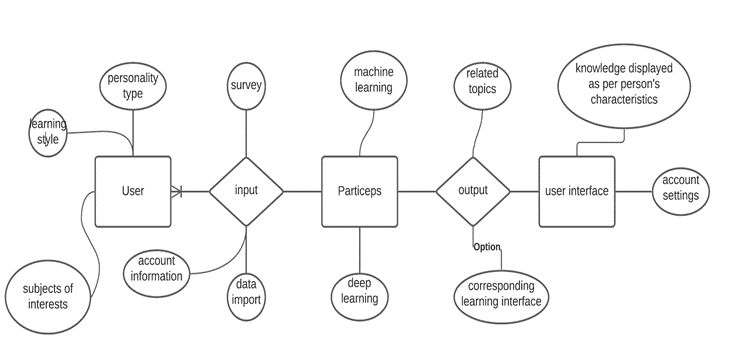

Motivation
Growing
up in a household of teachers and currently being a teacher myself, I have come
to appreciate different approach to pedagogy and self-learning. My father
taught me that a good approach to improvement and absorbing new information and
integrate that information to our toolkit is through endless practical
application and practice: instead of studying hypothetical situations or dry
mathematical equations or formula by heart, just do 100 to 1000 relating
problems or design a few projects that implement such mathematical formula. On
the other hand, my mother taught me that approach to text-heavy subjects should
be through constant referencing and extra self-reading. If you want to explore
an author’s work in depth, read his other work to find his pattern, his
literary style, his common message and aspirations, etc…. As a teacher myself I
find that approaching student in a superior-subordinate relationship commonly
found in conventional education to be outdated. Instead, why not be a companion
with mutual respect and experience to offer our students. That way, the
learners can feel more comfortable absorbing new information. With all that in
mind, I take a look at the increasing trend in e-learning. With the current
pandemic and ever developing communication technologies like Zoom and Google
meets, people are looking for alternatives from conventional face-to-face
meetings, or even with an instructor at all. According to UTEP Connect Extended
University, more than 6 million students are seeking to studying online.
Additionally, many applications modelled after “Do It Yourself” style has
burgeoned with the advent of smart phones and the non-stop development of
internet 3.0 and 4.0. I notice that many of these applications have static
interfaces, like “IETLS Preps” or other English learning software. Particeps
has the competitive edge of personalized and customizable interface tailored to
each user.


 
